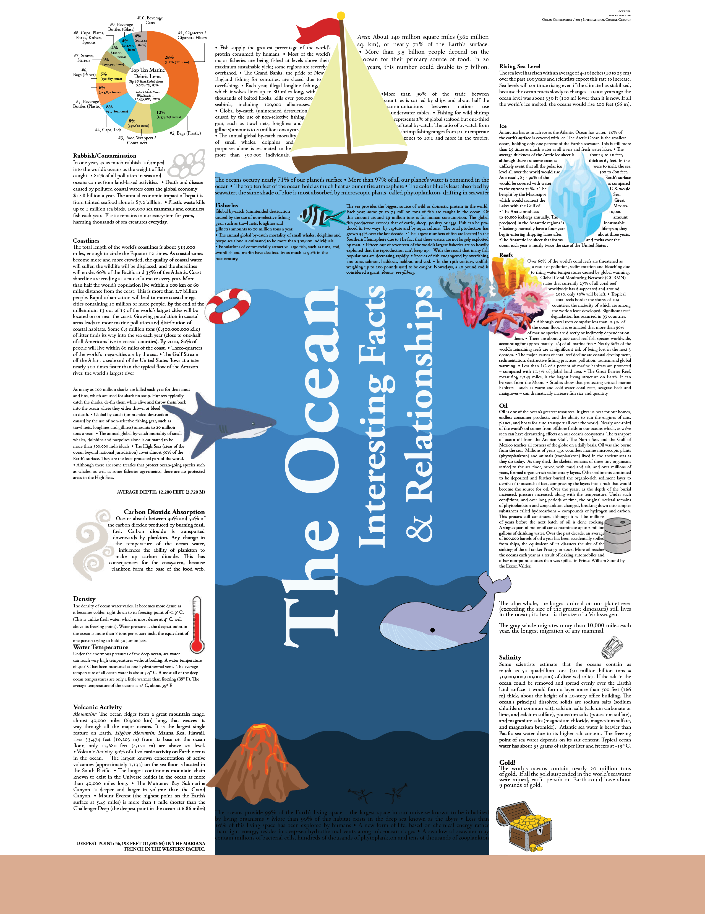

Worked in a team to provide client with an optimal solution through revised documents intended to replace ineffective and unsafe references. Our goal was to create an accessible document and demonstrate its ability to be understood by all levels of the workforce. Please click the image to view the entire PDF.
Applied for two grants on behalf of a local non-profit organization, following rigid constraints and professional exhibition. Please click the image to view the entire PDF.
Created poster series, billboards and promotional materials focused on reducing substance use among teenagers, promoting healthy choices, and representing the volunteer organization positively. Maintained consistent use of social norms to appeal to youth and adults in school and the community. Please click the image to view the entire PDF.
Designed through critique in order to present a polished logo for commercial use. Please click the image to view the entire PDF.
Worked in a team to create faux promotional materials for a selected company. Designed a business card and full brochure showcasing level of professionalism and pride the company offers through their services. Please click the image to view the entire PDF.
Designed a 30x20 inch poster highlighting ocean facts while following the Gestlat design principles. The piece is intended to display a large amount of information in an accessible format while appealing to the young audience. Please click the image to view the entire PDF.
